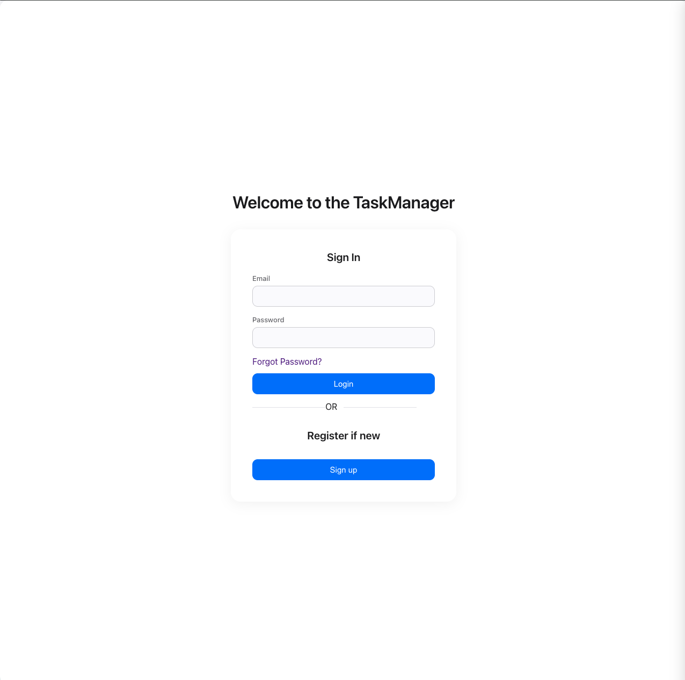
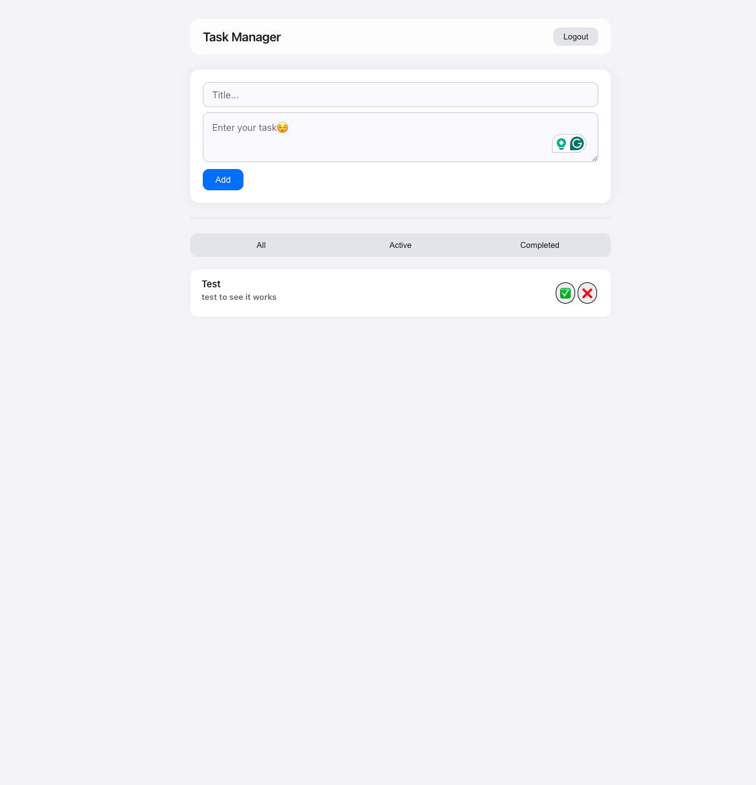
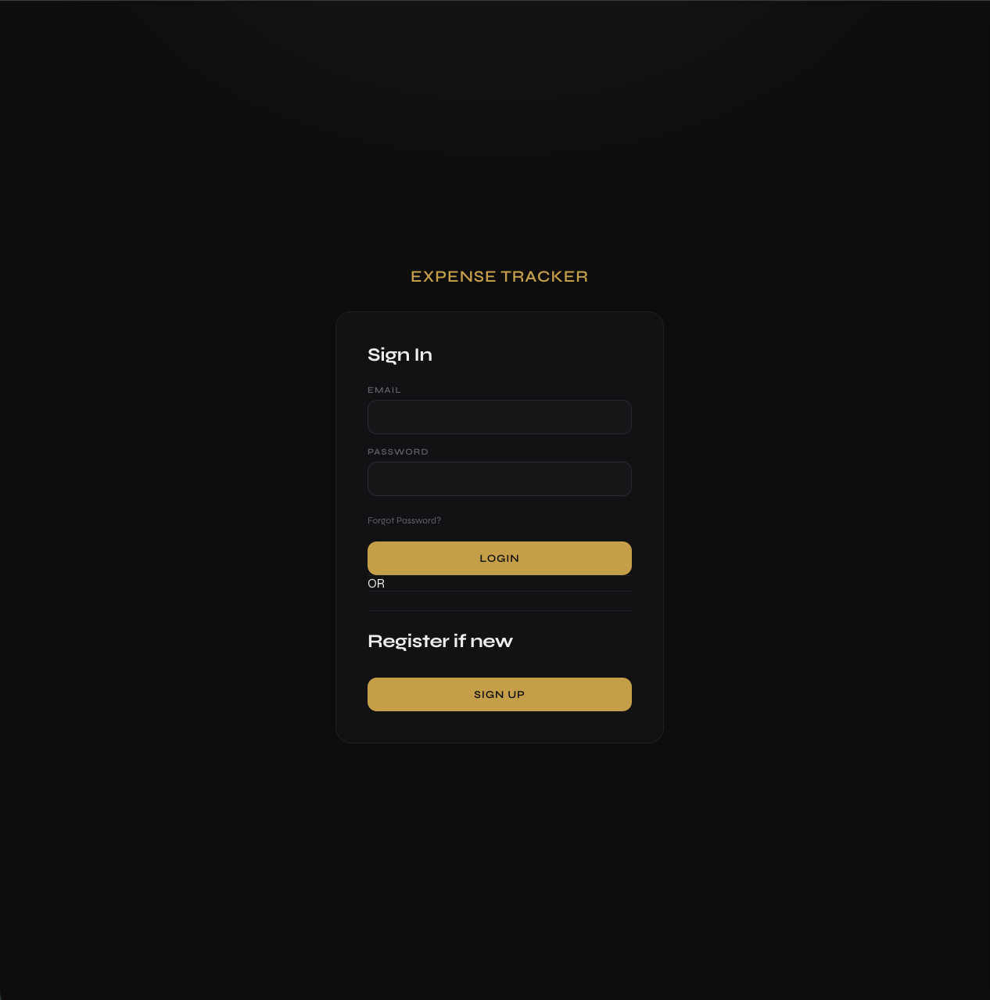
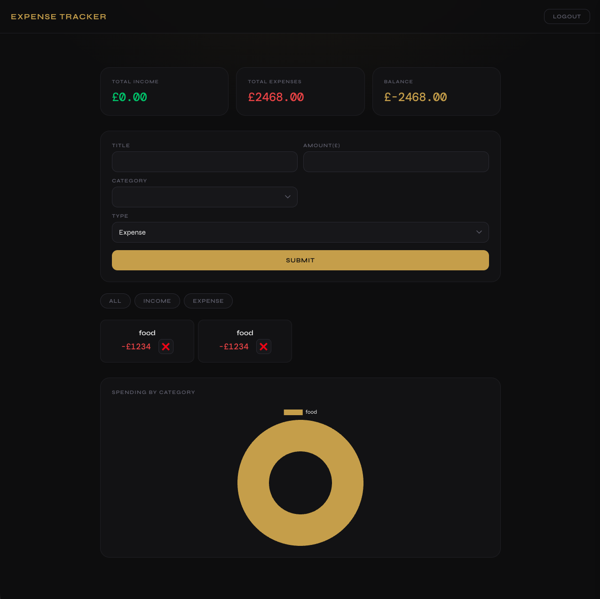

Baffour Kwabena Gyimah
Junior Full-Stack Developer
Self-taught full-stack developer with two deployed production applications built using React, Node.js, Express, and PostgreSQL. Experienced in implementing user authentication, RESTful API design, database management, and data visualisation with Chart.js. Holds an MSc in Environmental Management and brings strong analytical thinking, attention to detail, and a proven ability to learn quickly. Actively seeking a junior developer role to contribute and grow within a collaborative team.
Github
Task Manager
A full-stack task management application with user authentication, persistent data storage, and a dynamic React frontend. Built with Node.js, Express, PostgreSQL, and React. Implements login/register/logout, sessions stored in PostgreSQL, full CRUD functionality, and a protected REST API connected to the frontend via Axios.
Live: https://task-manager-fibo.onrender.com
Code: github.com/Baffyy/Task__Manager


Expense Tracker
A full-stack expense tracking application with income/expense logging, live summary cards, and a doughnut chart showing spending by category. Uses SQL GROUP BY and SUM for data aggregation, Chart.js for visualisation, and is deployed with a Neon PostgreSQL database.
Live: https://expense-tracker-kv1h.onrender.com
Code: github.com/Baffyy/Expense_Tracker

